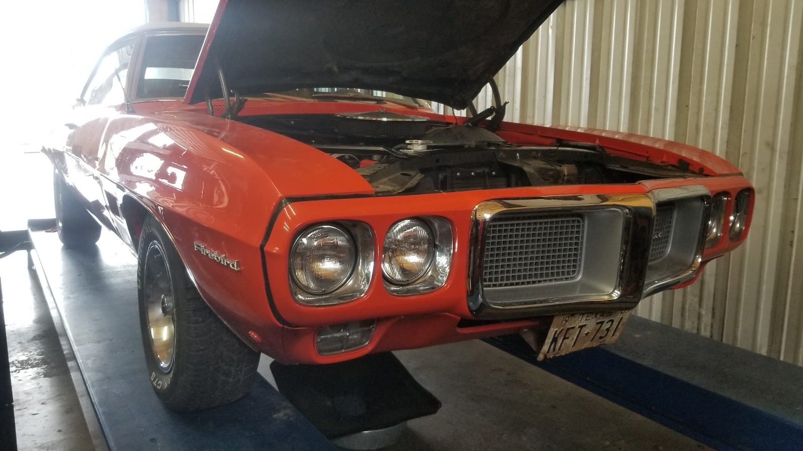

D C Transmissions · Dripping Springs
Our work
Cars in the bay and parts from real jobs.
What we found, what we fixed
Inside a transmission job


Found Fix now
A transmission opened up, clutch pack and housing exposed. The shop pledges not to take one out unless it is truly necessary, and only with your approval.
Fixed Checked
A finished rebuild with a freshly painted pan and torque converter housing. Rebuilds carry an ATRA National Warranty of 12 months or 12,000 miles.


